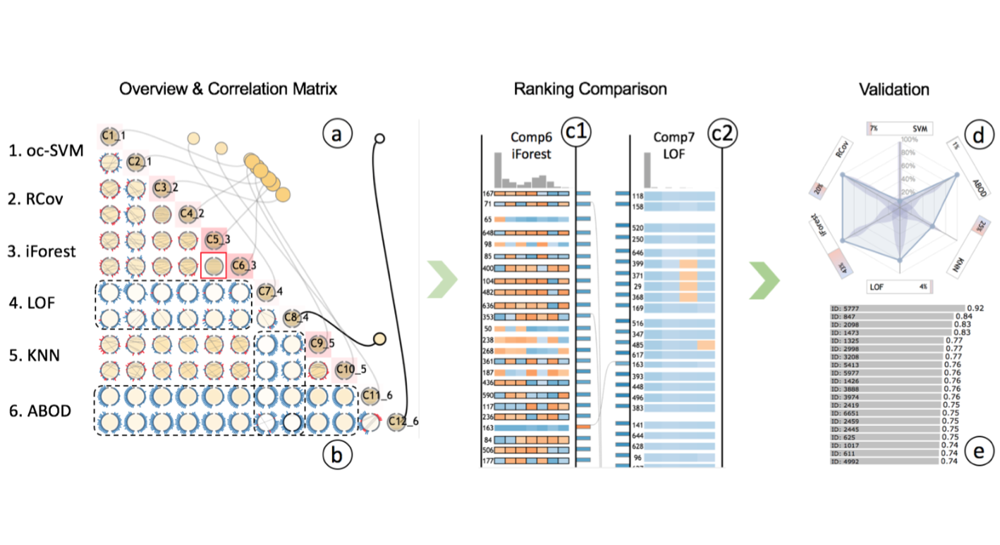
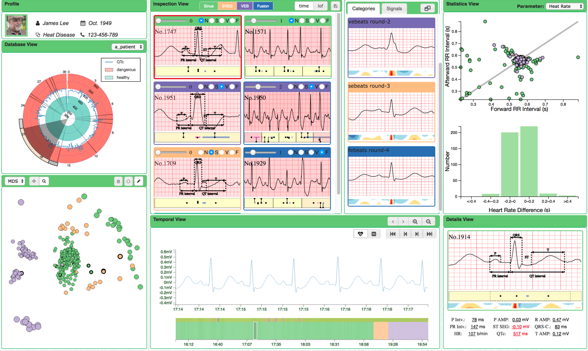

Ke Xu
My name is Ke Xu 徐科, currently a Ph.D. student in Department of Electrical and Computer Engineering (ECE), Hong Kong University of Science and Technology. My supervisor is Prof. Huamin Qu, professor and PG-coordinator in Department of Computer Science and Engineering (CSE), VisLAB@HKUST.
My research interests, broadly, are Information Visualization and Human-Computer Interaction. Specifically, I am interested in data visualization in domains of anomaly detection and healthcare.
I received my bechalor degree at School of Electronic Science and Engineering, Nanjing University (NJU).
Contact: kxuak@connect.ust.hk | Resume |
News
| Jul 11 | EnsembleLens was accpected by IEEE VAST 2018 |
| Feb 9 | ECGLens received Best Paper Honorable Mention Award at CHI 2018 |
| Dec 21 | ECGLens was accepted by CHI 2018 |
| Jul 14 | EventThread was accepted by VAST 2017 |
Anomaly Detection, Healthcare

EnsembleLens: Ensemble-based Visual Exploration of Anomaly Detection
Algorithms with Multidimensional Data
TVCG VAST IEEE Transactions on Visualization and Computer Graphics, 2018.
Download: [pdf]

ECGLens: Interactive Visual Exploration of Large Scale ECG Data for Arrhythmia
Detection
CHI Proceedings of the SIGCHI Conference on Human Factors in Computing Systems, 2018.
Download: [pdf] [video] Best Paper Honorable Mention (top 5% of all submissions)
Event Sequence Data Analysis
 EventThread: Visual Summarization and Stage Analysis of Event Sequence Data
EventThread: Visual Summarization and Stage Analysis of Event Sequence Data
TVCG VAST Proceedings of the IEEE Visual Analytics Science and Technology, 2017.
Download: [pdf]
Work Experience
| Jul 2015 - Now | Hong Kong University of Science and Technology, Clear Water Bay, Hong Kong | |
| Ph.D Candidate, VisLab | ||
| Feb 2017 - Sept 2017 | Tongji University, Shanghai, China | |
| Visiting Student (with Prof. Nan Cao), iDVx Lab | ||
| Dec 2014 – Apr 2015 | Nanjing University, Nanjing, China | |
| Research Assistant, Microelectronics Design Institute | ||
| Jun 2014 – Sept 2014 | McGill University, Montreal, Canada | |
| Summer Intern (with Prof. Kirk), Department of Material Engineering |
Talks
| Oct 2018 | EnsembleLens: Ensemble-based Visual Exploration of Anomaly Detection Algorithms with Multidimensional Data |
| IEEE VIS Conference, Berlin, Germany | |
| Apr 2018 | ECGLens: Interactive Visual Exploration of Large Scale ECG Data for Arrhythmia |
| ACM CHI Conference, Montreal, Canada |
Awards
| Feb 2018 | Best Paper Honorable Mention Award, CHI'18 |
| ACM CHI Conference | |
| Jun 2015 | Excellent Graduate of Nanjing University |
| Nanjing University | |
| Oct 2014 | First Prize of Red Sun Scholarship |
| Nanjing University | |
| Oct 2013 | Baosteel Scholarship |
| Baosteel Group, Nanjing University,
for 2 of Sophomores in Nanjing University |
|
| Oct 2012 | National Scholarship |
| Ministry of Education of the People’s Republic of China |